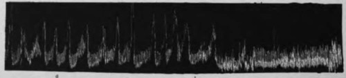

Chapter XVII. Hunger And Appetite In Disease. I. Action Of Bitter Tonics Action On The Hunger Mechanism
Description
This section is from the book "The Control Of Hunger In Health And Disease", by Anton Julius Carlson. Also available from Amazon: The Control of Hunger in Health and Disease.
Chapter XVII. Hunger And Appetite In Disease. I. Action Of Bitter Tonics Action On The Hunger Mechanism
The value of "bitter herbs" in disease is a current popular belief, and the use of these bitters as medicine probably antedates even the "medicine man" of primitive human society. Today the use of bitters is, or at least should be, confined to cases of impaired gastric digestion. The mechanism of tfiis action is still in the main an open question, despite a considerable amount of experimental work. The literature seems to show that the bitters cause increased secretion of gastric juice. Nevertheless, Cushny concludes that the favorable effects from bitters are largely subjective. The bitters are capable of producing a considerable impression on the patient, so that their effects may be due in part to suggestion and not to any real action of the drug. That the bitters increase appetite and hunger is a generally accepted view. The bitters may produce these results in any or all of the following ways: (i) direct inauguration or augmentation of the hunger contractions of the empty stomach, or hastening the reappearance of the gastric hunger contractions by facilitating gastric digestion (through increased secretion or increased peristalsis), and thus accelerating the emptying of the stomach; (2) augmentation of appetite directly by stimulation of gustatory and other sensory nerves in the mouth, esophagus, and stomach, or indirectly, by accelerating gastric digestion; (3) central Bahnung or facilitation, the strong afferent impulses from the mouth (and possibly also from the esophagus and stomach) may in some way bring feeble hunger and appetite sensations more prominently into consciousness.
The tests were carried out on a number of normal men, and the influence of the bitters in the mouth and in the stomach was tested separately. The bitters were introduced through the stomach tube when it was desired to study the action from the stomach alone. In Mr. V., and usually also in the dogs, the drugs were introduced through the gastric fistula.
In order to exclude possible psychic factors, the subject was frequently kept in ignorance of the nature of the substance (water or drug) as well as of the time when it was given.
The following bitters were used: tinctures of gentian, quassia, columba, humulus, and condurango; elixir of quinine, strychnine, and iron.
In the case of man the bitters were introduced into the stomach in varying quantities up to the maximum therapeutic dose, but never exceeding that. In the case of the dogs the drugs were used in gradually increasing quantities until definite effects were produced.
I. Action In The Stomach
When used in therapeutic quantities and introduced directly into the stomach so as not to come into contact with the mouth or esophagus, these bitters have no direct action whatever on the hunger mechanism. If the bitters are introduced into the stomach during a" hunger period, the gastric hunger contractions continue in their normal rate and strength until the completion of the hunger period, except for a slight temporary inhibition that may appear immediately on introduction of the drug. This transient inhibition is not peculiar to these drugs, however, since it follows the introduction of any liquid, including water at body temperature, directly into the stomach. At no time did we obtain an increase in the gastric hunger contractions from the bitters. If the bitters are introduced into the empty but quiescent stomach, that is, between two hunger periods, there is no immediate initiation of gastric hunger contractions or hastening of the appearance of the next hunger period.
The foregoing results were obtained with all the bitters both in man and dogs, so that we are inclined to believe that all the numerous bitters used in therapeutics are without direct action (that is from the stomach) on the hunger mechanism when used in therapeutic quantities.
When the bitters are introduced directly into the stomach in sufficient quantities to produce demonstrable effects on the hunger mechanism, this action is always in the direction of inhibition, and the inhibition is the greater the greater the quantity of the drug. All the bitters tried are capable of causing this inhibition of hunger. It is not known what ingredient in the bitters is responsible for this action. The alcohol in the tinctures will itself produce some inhibition. This inhibition is not peculiar to the bitters, as previous work has shown that anything which stimulates the nerve-endings in the gastric mucosa inhibits the gastric hunger mechanism in proportion to the intensity and duration of the stimulation. And it is of little or no interest in therapeutics, as the quantities of the drugs required to produce it are much greater than that permissible in practical medicine. When the elixir of iron, quinine, and strychnine is put into the stomach in quantities sufficient to affect the hunger mechanism, the animal usually develops mild symptoms of strychnine poisoning (rapid respiration, greatly increased reflex excitability). During this period of increased activity of the skeletal neuromuscular mechanisms, there is not only no increase in tonus and hunger contractions of the empty stomach, but the stomach is rendered even more atonic than during the quiescent interval between the hunger periods in the normal animal, a situation similar to that found in animals in parathyroid tetany. According to Heubner and Reider, large doses of bitters retard the emptying of the stomach in digestion.
Fig. 38-Record of the gastric hunger contractions of man; o, introduction into the stomach (by tube) of 5 c.c. tinct. gent, comp.; showing no influence on the hunger contractions; b: a few drops of the same bitters put in the mouth, showing complete and protracted inhibition of the gastric hunger contractions (and consequent absence of the subjective hunger sensation).
2. Action In The Mouth
The experiments on dogs were unsatisfactory and inconclusive, for the reason that the dogs object to the bitters, even when given in minute quantities by the mouth. The dogs salivate profusely, become restless, and endeavor in various ways to get rid of the apparently disagreeable taste of the bitters. Putting small quantities of the bitters in the mouth invariably leads to prompt and prolonged inhibition of the gastric hunger contractions, but inhibition of the hunger pangs in dogs accompanies restlessness of the animal from any cause. The results on man are not complicated by the uncontrollable factor of struggling and protest.
In man the bitters acting in the mouth inhibit the gastric hunger contractions in direct proportion to the intensity of their stimulation of taste sense. If the bitters are placed in the mouth during a period of quiescence of the empty stomach, there is no initiation of gastric hunger contractions, but so far as any effect can be detected this is a temporary inhibition of the gastric tonus. The temporary inhibition of the gastric tonus and hunger contractions by the bitters acting in the mouth is not followed by an increase in gastric tonus or gastric hunger contractions above the normal. That is, there is no after-effect of the nature of augmentation or stimulation of the hunger mechanism. A few drops of tincture of condurango on the tongue may inhibit the hunger contractions for 15 to 20 minutes.
We think that a sufficient number of bitters is included in the experiments above to justify applying the results to the whole group of bitters, especially in view of the fact that the action on the hunger mechanism is the same in all cases.
These experiments were conducted on normal individuals, while the bitters are or should be prescribed only in cases of anorexia, a disordered digestion, or particularly a disordered gastric digestion. There remains the possibility of a more favorable action of the bitters on the hunger mechanism in these pathological conditions. It is desirable that direct tests be made on such material with proper control. But we venture to predict that the results will be the same as those reported above on normal men, as it is not likely that the fundamental reflex relations of the sensory nerves in the mouth and the gastric mucosa to the hunger mechanism are so readily changed by disease.
It must be noted that the reflex inhibition of the hunger contractions from the actions of the bitters in the mouth is accompanied by cessation of the conscious hunger pangs. There is a complete parallel between the objective inhibition and the subjective absence of hunger sensation.
The foregoing results show clearly that the bitters usually employed in therapeutics have no favorable action on the hunger mechanism. But the therapeutic use of these substances may still be justified by their direct action on gastric secretion or on the appetite.
Summarizing, we conclude that in therapeutic quantities the bitters, acting in the stomach alone, have no effect on the gastric tonus or the gastric hunger contractions or on the parallel sensation of hunger. In greater than therapeutic doses the bitters inhibit the hunger contractions and abolish the hunger sensations, probably by stimulation of nerve-endings in the gastric mucosa. Acting in the mouth alone, the bitters, even in traces, inhibit the hunger contractions and abolish the hunger sensations in direct proportion to the intensity and duration of the stimulation in the mouth, and there is no after-effect in the way of augmentation of hunger contractions and hunger sensations.
Continue to:
- prev: IV. Experimental Investigation Of The Hunger Mechanism In Disease Of Man. Continued
- Table of Contents
- next: II. Action On The Secretion Of Gastric Juice In Normal Men And Dogs